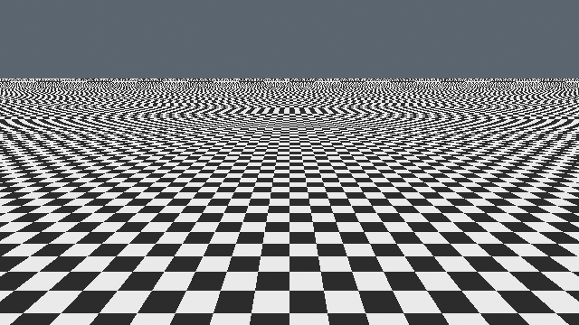
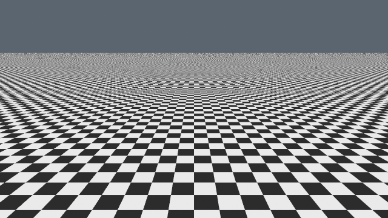
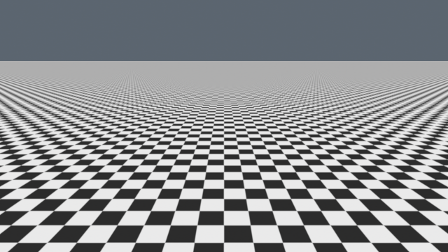

Moiré / Unreal
One scene. One camera. Three ways to render the detail.



Capture details and evidence
All three images use the same fixed Glide0 camera, procedural checker source and display settings. Each has one spatial sample, one temporal sample and 64 discarded render warm-ups. TSR uses 100% input/output resolution and a 200% history. Our shader integrates a Gaussian pixel window with standard deviation 0.5 pixel; TSR has a different reconstruction filter.
The scene is unlit. Exposure, tone curve, vignette, motion blur and dynamic resolution are disabled. Raw output matches the rounded source palette within one byte. These are actual Metal renders; Movie Render Queue uses an offline view family, so these captures do not establish main-game temporal behavior or performance.
Independent image checks · Matched capture manifest · Source contract and limits · Reproduce the captures